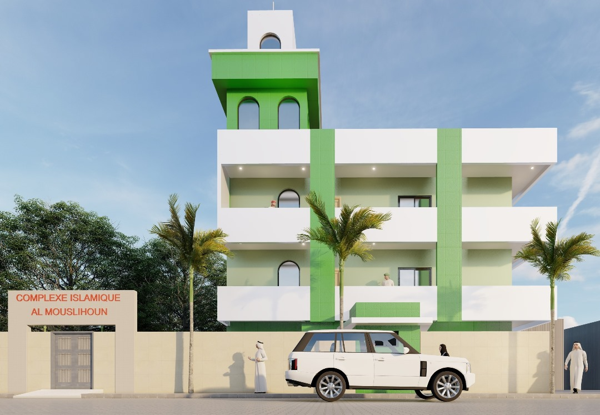
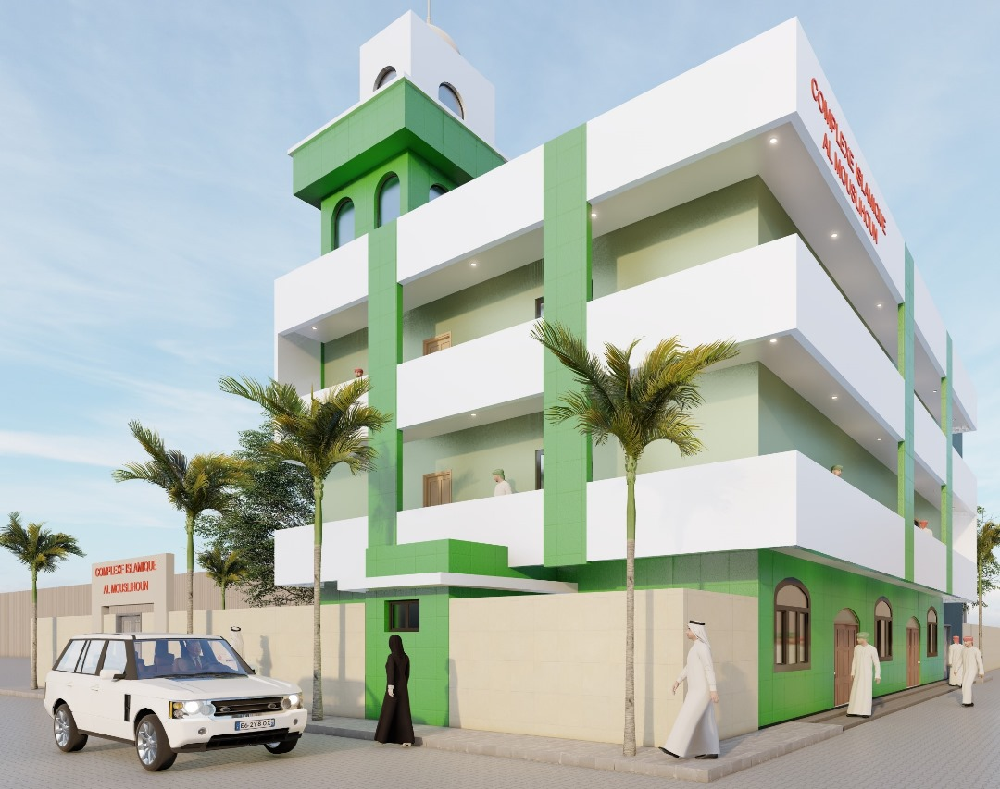
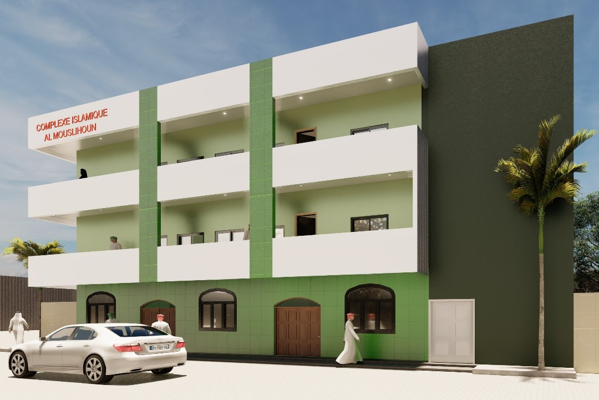
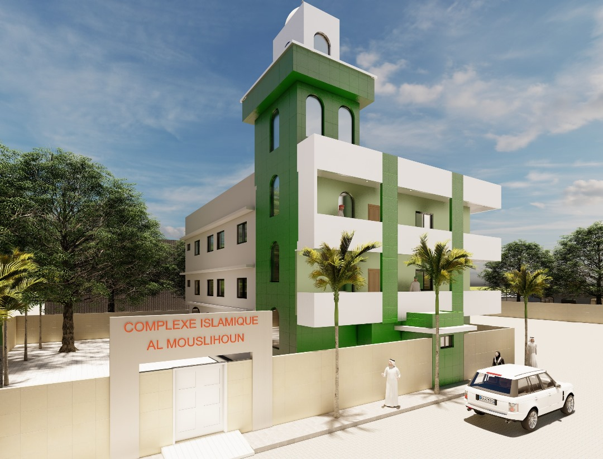

المُصلحون
Al Amine Academy, représentant officiel de CollecteSadaqa.com au Sénégal
Ensemble, nous construisons un avenir meilleur pour les orphelins, les démunis et les communautés vulnérables.
DAARA Al Amine Academy est le représentant officiel de CollecteSadaqa.com au Sénégal. Nous menons les mêmes activités humanitaires et sociales : construction de complexes éducatifs, parrainage d'orphelins, distribution alimentaire, colis solidaires et aide aux familles en difficulté.
Les mêmes engagements que CollecteSadaqa.com, déployés localement au Sénégal
Construction de centres éducatifs et mosquées pour les communautés démunies. Le Projet Al Mouslihoon en est le pilier.
Prise en charge complète d'orphelins : éducation coranique et scolaire, nourriture, vêtements et suivi médical.
Distribution régulière de colis alimentaires aux familles nécessiteuses, particulièrement pendant le Ramadan.
Forage de puits dans les zones rurales pour permettre aux communautés d'accéder à l'eau potable.
Attribution de bourses scolaires aux élèves méritants issus de familles à revenus modestes.
Organisation de Aqiqa et sacrifices rituels pour les familles qui le souhaitent, avec distribution de viande aux plus démunis.
المُصلحون
Construction d'un complexe éducatif et social pour la communauté



Le Projet Al Mouslihoon vise la construction d'un complexe éducatif comprenant une école coranique moderne, des salles de classe, un espace de prière et des infrastructures d'accueil pour les orphelins et les élèves en internat.
Ce projet incarne les valeurs de solidarité et de partage qui animent CollecteSadaqa.com et DAARA Al Amine Academy. Chaque contribution — Sadaqa, Zakat ou don ponctuel — rapproche ce rêve de la réalité.
Avancement du chantier du complexe Al Mouslihoon
Chaque geste compte. Votre Sadaqa est un investissement pour l'au-delà.
Faites un don libre pour soutenir nos projets en cours. Chaque montant est le bienvenu.
Purifiez votre richesse en versant votre Zakat. Nous la redistribuons aux bénéficiaires éligibles.
Parrainez un orphelin ou un élève et offrez-lui une éducation complète et un cadre de vie stable.
مَنْ بَنَى لِلَّهِ مَسْجِدًا بَنَى اللَّهُ لَهُ بَيْتًا فِي الْجَنَّةِ
« Quiconque construit une mosquée pour Allah, Allah lui construira une maison au Paradis. »